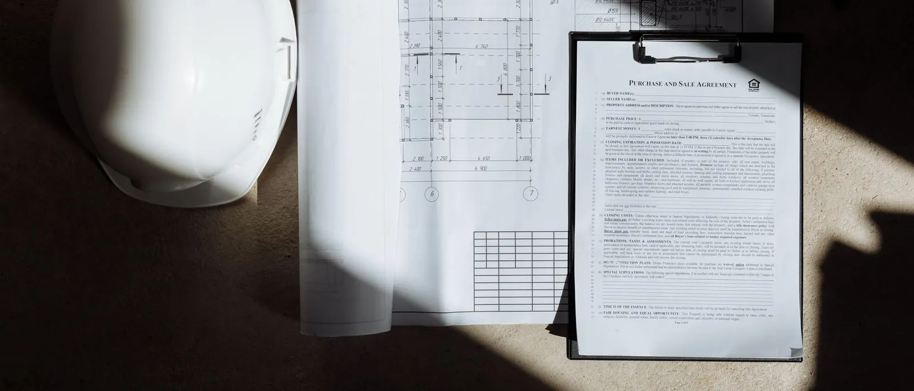
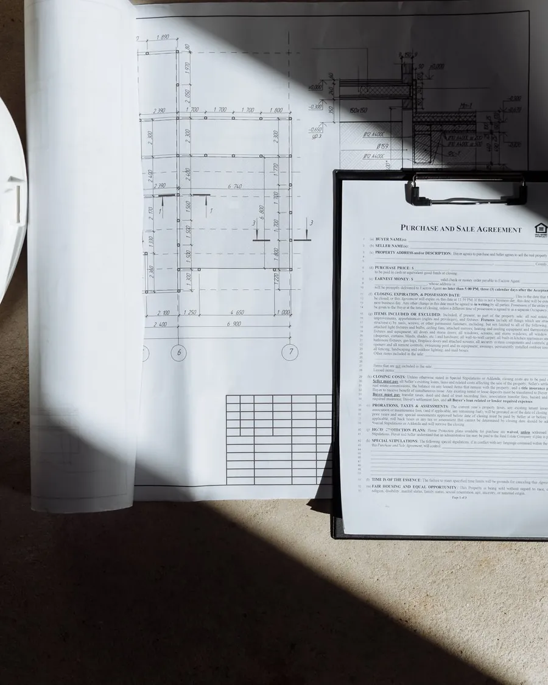

Услуга 03
Документы и сдача
Помогаем подготовить исполнительную документацию и сдачу здания в эксплуатацию, чтобы после стройки всё было в порядке и на бумаге.
НаписатьЧто входит
Что приводим в порядок перед сдачей
Конкретный объём работ определяется по договорённости, в зависимости от объекта и его этапа.
Исполнительная документация
Собираем исполнительные схемы, акты скрытых работ и документы о соответствии материалов в одну папку.
Проверка документов
Проверяем журнал строительных работ и остальные документы, которые велись на объекте, перед сдачей.
Условия разрешения на строительство
Проверяем, что условия разрешения на строительство выполнены и задокументированы.
BIS
Помогаем подготовить и подать документы в Информационной системе строительства (BIS) и уточнить данные о здании.
Приёмка в эксплуатацию
Готовим заявление и документы для приёмки здания и участвуем в приёмке.
Список дефектов
Готовим список дефектов и следим, чтобы дефекты были устранены до сдачи.
Передача документов заказчику
Приводим документы в порядок так, чтобы у заказчика было одно место, где найти всё о здании.
Как идёт работа
Четыре шага
- 01
Проверка документов
Смотрим, какие документы уже есть и каких не хватает, и составляем список того, что нужно привести в порядок.
- 02
Сбор недостающего
Запрашиваем документы у строителя, поставщиков и проектировщика, проверяем их содержание.
- 03
Подача
Готовим и подаём документы в BIS и в самоуправление согласно условиям разрешения на строительство.
- 04
Сдача
Участвуем в приёмке здания и передаём заказчику приведённую в порядок папку документов.

Кому это подходит
Перед передачей ключей
Тем, кто завершает стройку
Если работы закончены и нужно привести в порядок документы перед сдачей в эксплуатацию.
Тем, кто покупает готовое здание
Если вы покупаете здание и хотите проверить, соответствуют ли документы фактической постройке.
Владельцам из-за границы
Если недвижимость в Латвии, а сами вы в другом месте, оформляем документы и объясняем требования.
Расскажите об объекте
Напишите, что строится, где и на каком этапе работы. Ответим с предложением.